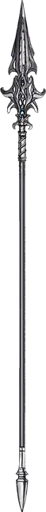

Перст ветра
Windvane
Оружие (копьё), легендарное (требуется настройка)

Рекомендованная стоимость от 50 001 зм
Перст ветра — это серебряное копьё, отполированный наконечник которого украшен тёмными сапфирами. Его древко абсолютно неосязаемо: кажется, будто держишь в руке не копьё, а лёгкий прохладный ветерок, принявший его форму. В этом копье содержится частичка силы Ян-Си-Бина, Принца Злого Воздуха.
Вы получаете +2 к броскам атаки и урона этим магическим оружием. При попадании цель получает дополнительный урон электричеством 1к6.
Власть над воздухом. Если вы вооружены Перстом ветра, то получаете следующие преимущества:
- Вы свободно говорите на Ауране.
- Вы обладаете сопротивлением урону электричеством.
- Вы можете наложить заклинание подчинение чудовища [dominate monster] (Сл спасброска 17) на воздушного элементаля [air elemental]. Если вы наложили это заклинание, то не сможете вновь использовать данное свойство до следующего рассвета.
Песнь четырёх ветров. Находясь в элементальном узле воздуха, вы, с помощью перста ветра, можете совершить ритуал под названием «Песнь четырёх ветров», который позволит вам создать воздушную сферу опустошения [devastation orb of air] (см. описание сфер опустошения для информации о времени и стоимости ритуала). После окончания ритуала вы не сможете повторить его до следующего рассвета.
Слабость. Перст Ветра делает своего хозяина непостоянным и ненадёжным. Пока существо настроено на это оружие, оно получает следующую слабость: «Я нарушаю клятвы и планы. Долг и честь не значат для меня ничего».